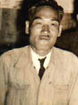

赤旗が語るもの（作成：2007年8月2日）

私の手元にいま、「頑張れ」「団結」とそれぞれに墨で手書きされた2枚の赤旗がある。
「もう私たちの時代は終わりました。三池のことを残したいとがんばっておられるあなたにお送りします」ー 送り主
は72歳。他に、「みいけ十年」と「みいけ二〇年」の分厚い組合史および闘争時代の写真が添えられていた。
それら写真の中には「昭和28年11月27日、113日首切闘争ヲ終リ、戦ヒ勝チ復職ヲ祝シテ」という、いわゆる
「英雄なき113日の闘い」に関する写真もあった。 三池炭鉱在職中、三池闘争で警察に逮捕され拘留された体験を持つ。54歳のときだった。この時7人家 族。当時25歳になっていた息子さんは「三池闘争時代のことは思い出したくもない」といい、代わりに「主人の お父さんは大きな闘争のとき、先頭に立って闘われ、最後は留置場に入れられてもがんばられたそうです」と 奥さんが語る。「他にも貴重な資料がたくさんあったのですが、警察に家宅捜索される直前に全部焼いて捨て たそうです」と、その証言は生々しい。
三池闘争での三池労組員逮捕者は「不当逮捕累計82名」（1960年5月12日付け三池労組「日刊情
報第89号」）。さらに主婦9名（臼井社宅5名、四山社宅4名）も逮捕された。その取調べは、現場写真を
見せるなどして、「仲間の名前を言えば早く家に帰してやる」などと執拗だったという。 そんな親たちの歴史を秘めた赤旗2枚。自分の親たちもこうして必死に闘ってきたのだろうか。その親が私たち 子供に語りたかったことは何だったのか、その答えが少しわかったような気がした。
|